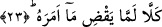

Efendimiz (s.a.); “Ölen kimsenin kıyameti kopmuştur” [17] buyurmaktadır.
Peygamberimiz’in böyle buyurması, ölüm ânının kıyamet anına bitişik olmasından
dolayıdır. Ölüm, küçük kıyamet olup ne zaman kopacağı belli değildir. Tıpkı büyük
kıyametin de aynı şekilde ne zaman kopacağının belli olmaması gibi.
Bu âyet-i kerimede, ölmüş olan bir kimsenin -saâdet ehlinden ise- dirilmesinin saâdet
ehli olan kimselerin kabirlerinden olacağına işâret vardır. İsterse o kimse şakavet ehli
olan kimselerin kabirlerinde gömülü bulunsun!... Yine şakavet ehli olan kimsenin de -
saâdet ehli olanların kabirlerinin bulunduğu yere gömülse bile- dirilişinin şakavet ehli
olan kimselerin kabirlerinden olacağına işâret vardır. Bundan dolayı el-Meşarık isimli
eserin müellifi kitabının baş tarafında şöyle diyor: “Sonra dilediği bir vakitte onu
yeniden diriltir.” Yani onu Mekke’den diriltir. Mekke’de gömülmüş olan bir kimse eğer
o topraklara lâyık değilse melekler onu başka bir yere naklederler. Bir hadis-i şerifte
şöyle buyuruluyor: “Benim ümmetimden herhangi biri Lut kavminin fiilini yaparsa
Allah Teâlâ o kişiyi Lut kavminin o işi yapan kötülerinin yanına nakleder. Ta ki
onlarla birlikte haşrolsun.” [18] Bir başka hadis-i şerifte ise şöyle haber veriliyor:
“Lut kavminin fiilini yaparken ölen bir kimsenin kabri yürütülüp o fiili işleyen Lut
kavminin yanına götürülür ve bu kişi kıyamet günü onlarla birlikte haşrolunur.” [19]
Nitekim İmam Süyûti’nin ed-Düreru’l-Munteşira isimli eserinde aynı şekilde ifâde
olunmaktadır.
Bu âyet-i kerimede “insanoğlunun inkâr etmemesi gerektiği”ne işâret vardır. Çünkü
Allah Teâlâ onu mutlak vücut nutfesinden yaratmıştır ve onu kendi zatına, sıfatlarına ve
isimlerine mazhar olacak şekilde hazırlamıştır. Ardından cemâli ve celâli isimlerin
mezâhirî (görünme yeri)nde zuhûr etme yollarını kolaylaştırmıştır. Sonra onu
enâniyetinden alarak öldürmüş, fena ru’yetinden soyutlayarak, fena kabrine gömmüştür.
Sonra da dilediği vakit onu fenâ mertebesinin ardından bakâ sûretinde diriltecektir. Şu
halde kula düşen nimetin değerini bilmesi, Allah’ta olan ilim, kudret, irade vb. kemal
sıfatlarının kendi nefsinde olduğunu iddiâ ederek kendini beğenip gurura
kapılmamasıdır.
23. Hayır henüz Allah’ın emrettiğini yapmadı.
“Kellâ/hayır” ifâdesi, insanoğluna bulunduğu hal ve durumdan kaçınması için bir red
ve menetme ifâdesidir. Kırâat âlimi İmam Secavendi “kellâ” ifâdesini
“hakkan/gerçekten” şeklinde anlamış ve bundan dolayı kelime üzerinde vakf
yapmamıştır. Bilakis o, vakf işâretini bundan sonraki “ma emerahu” ifâdesinin sonuna
koymuştur. Gerçekten “kellâ” kelimesi “hakkan” mânâsına olursa bu takdirde
kendisinden sonraki kelimelere tabi olur.